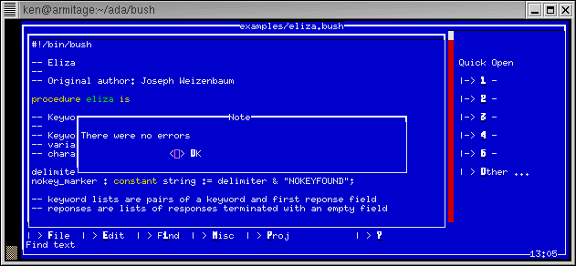

![[BUSH User Guide]](bush_title_bar.gif)
|
The BUSH home page is http://www.pegasoft.ca/bush.html.
Bush is useful for any enterprise wishing to lower development time and costs of scripted applications, increase portability and interoperability of applications, provide better security, scalability and reduce complexity of IT infrastructure.
There is a non-technical "Executive Summary" in section 1.1.
The latest stable BUSH source code is made available on the PegaSoft web site on the BUSH download page. There is also a Subversion (SVN) repository which makes available the latest unstable development version but this is only made available to core BUSH developers. A copy of the development version can be made on request.
We welcome all contributions but please understand that we may reject a contribution if it conflicts with the design or goals of BUSH. Please contact us before beginning any large contributions to BUSH.
BUSH is maintained by volunteers: there is no guarantee that we will be able to fix your bug right away. But we still want to hear about it.
If you find a bug, please follow this procedure:
Do you want to see a BUSH script? Here is a short one.
? "Hello World!"; |
There are many shells, interpreters, languages and web template systems. Virtually without exception, they are incompatible with one another. What's the point of learning a tool that, no matter how sophisticated it is, leaves your source code stuck with that particular tool. You want to do scripting, so you use Python or Scheme. You want to do reporting, so you use Perl or AWK. You want to write a command script, so you use Bash or Zsh. You want to write an applet, so you use Java. To be a programmer these days, you need to be fluent in a dozen different languages. You would be making more money if you got a job at the United Nations.
The Business Shell is different. It is part of a language environment called ABEE, one of the most powerful and flexible environments available for Linux today. ABEE is built around a single language standard available on almost all Linux platforms, GCC Ada. Any project you write in Bush is immediately portable to any machine that GCC runs on. In other words, virtually everything. And it means that Bush scripts can be compiled using GCC and everyone knows that GCC is superior to most commercial compilers.
| A Bush Script | A GCC Program |
procedure hello is pragma ada_95; |
with text_io; |
You don't have to rewrite your scripts to use them in applications. Use the same variable types, the same structures, the same built-in packages. Cut-and-paste your code.
If that's not enough, using the JGNAT open source compiler, you can even compile your Bush scripts into actual Java bytecode. There is another tool, A#, that will compile scripts into .NET byte code Things don't get much more platform-independent than that.
What about PHP? BUSH has a HTML template engine that runs embedded scripts in a secure environment. No need to worry about users messing with your code...unless you want them to.
<html> <head> <title>Bush script embedded in a web page</title> </head> <body> <?bush ? "Hello World!"; ?> |
It's the same BUSH source code that you use for your scripts. No need to learn a special template language with a new set of rules.
But Bush does more than just create scripts, executable programs and Java applets. It's a powerful computer language on its own able to do complex math, manipulate files, generate reports and able to do network programming. And there are many built-in packages that will let you do everything from compute trig functions to connecting to a web server.
But best of all, Bush is easy. Perl claims to be easy. Easily like riding a bicycle backwards in the middle of a thunderstorm. Bush is easy to read, easy to understand. You know exactly what a script does without having to have a reference book beside you at all times
Bush doesn't run your programs outright. First it examines them, compresses them, and converts them into intermediate code. (That's "byte code", to you Java developers.) Bush optimizes the program for the best possible performance. It also takes the time to verify your program will run before attempting to execute the first line.
And if you make to typing mistake, Bush will let you know before running your program. There's no need to worry that your typo will be a valid command like it would be in most other languages. Bush works for you, not against you.
One tool for all solutions.
And, yes, Bush is also makes a pretty good shell.
So you basically have two choices. Keep working for the U.N., or give Bush a try and make your life a little easier.BUSH has additional requirements depending on what features are enabled.
For further information, check the INSTALL file included with the BUSH sources.
The source files and some pre-built versions can be downloaded from the BUSH home page at http://www.pegasoft.ca/bush.html.Complete installation details are in the README and INSTALL files included in the BUSH download file.
Many of these problems can be reduced by using a common development language for web pages, scripting and application building. Many languages, including Java and Perl, offer this kind of capability.
However, comparisons of software development languages, such as Rational Software's 2005 study by Zeigler (study) demonstrate that languages designed for correctness, code reuse and easy maintenance (so called "software engineering" languages) greatly reduce costs for businesses.
(Supporters of languages like Perl argue that less typing is the key to reducing costs. However, as the size and complexity of projects grow, the time to type is less significant that the cost of design and bug fixing).
PegaSoft's Business Shell is a scripting language, template engine and command prompt that is designed to solve these issues and allow faster development of large-scale web applications compared to other popular tools.
As long as the command prompt, compiled applications, web templates and scripts remain in fundamental dischord, these issues will be difficult to solve. These development tools cannot agree even on basic issues as to what constitutes a boolean, the working of a for loop, or the syntax for an associative array. There needs to be some structural design agreement between the development tools in order to create an enterprise-wide, open source software environment standard.
The standard proposed by PegaSoft is called the Ada-BUSH Enterprise Endeavor (ABEE). BUSH is part of a set of tools built around the ISO Ada standard to create a standardized framework for create applications. The other tools include:
Together, these tools compose a standardized framework for developing web templates, server applications, client side JVM and .Net applets, scripts and enterprise-wide computing. In all cases, the basic data types, control structures and libraries available to the developer have the same names, the same syntax and the same semantics. A boolean at the command prompt is like a boolean in a script is like a boolean in an HTML template and so forth. There is agreement at a fundamental structural level between the development tools. This agreement promotes code reuse, simplifies training and peer review, reduces modal thinking errors, makes code age-able and scalable.
ABEE also serves as an open source alternative to proprietary offerings like ASP .Net and Sun's J2EE.
In order to achieve standardization, ABEE uses the Ada 95 language. Ada 95 is the only open source language that provides all of the following functionality:
The following chart shows how ABEE can be divided into a multi-tier web development framework:
![[Ada-Bush Enterprise Model]](bush2ee.gif)
Figure: ABEE Multitier Enterprise Application Model
Client-Side
Presentation
On a user's desktop, native Ada 95 applications can be created with the Win32 version of Ada Core Techologies' GNAT (another name for GCC Ada) or one of the commercial desktop Ada compilers. Alternatively JVM applications can be created with Ada Core Technologies' JGNAT Java byte code compiler. Or create .Net applications using A#, the Ada .Net compiler. You can also create JVM or .Net applets to run in a client's web browser. In all these cases, using Ada means that developers need to know only one core language.
Server-Side Presentation
The web server can use BUSH web
templates to create web pages with embedded AdaScript code. Like
JSP, ASP, PHP and similar products, BUSH can connect to databases and
generate new web content dynamically. BUSH templates can
communicate to the other layers by opening TCP/IP sockets (for remote
machines) or by files (on local machines). Using AdaScript for
your templates means that developments use the same core language as
used in the other layers.
Server-Side Business Logic
To manage and cache information, compiled applications and server software can be built using GCC Ada. The server software gain the speed advantage of binary code for the host machine while still being able to communicate with the other tiers through files, TCP/IP sockets. Cluster computer can be done using GCC Ada's GLADE environment: GLADE partitions a single application over multiple computers without worrying about the underlying operating system. You can also share objects using Ada's CORBA implementation. Process control and information flow can be coordinated by BUSH scripts.
Enterprise Information Systems
BUSH has integrated support for SQL so there usually no reason to reply on a database client program. The stored procedure language for most databases is very similar to AdaScript and is intuitive to learn and use if developers are already familiar with ABEE. The database package with BUSH is also available with GCC Ada applications.
At each layer, developers will need to know only one core language, with the same basic constructions and types. For example, a "for loop" is written the same way in any tier, whether for a .Net application or a BUSH web template. This reduces training costs and makes source code portable between the tiers over solutions that require different languages at each tier. In addition, the same core packages are available (string handling, math, lock file handling, I/O, and others).
In comparison, consider Sun's Java 2 Enterprise Edition (J2EE) environment. Java "components" (small applications) can be distributed across an information system using secure connections to negotiate with one another. Ignoring Sun's marketing buzzwords, you can see that the open source ABEE approach is as good as or superior to J2EE:
GCC Ada is available in an award-winning, commercial, supported edition called GNAT Pro.
Aonix produces a commercial Ada compiler for Linux and other platforms.
To further illustrate BUSH's advantages over other popular tools, let us examine some of the issues raised in section 1.2 in detail.
The fundamental differents in syntax or semantics between different web development tools has led to difficulties in sharing source code between applications or developers. Consider the issue of null or undefined variables which have no associated value, string concatenation and array referencing.
The conventional C, Perl, PHP or BASH shell solution have no agreement on these basic features:
| Feature | GCC C Application | Perl Script | PHP Template | Shell Prompt |
| Undefined Variables | never | var == undef | empty() | -z (null string) |
| String Concatenation | strcat/strncat | . or word expansion | . | word expansion |
| Arrays | fixed size, 0-based index | variable size, 0-based index | variable size, 0-based index or strings | variable size, 0-based index |
Moving source code between these tools is inherently difficult even though they are often employed simultaenously for a web-based application.
The ABEE solution using BUSH provides fundamental consistency across these features:
| Feature | GCC Ada | BUSH Script | BUSH Template | BUSH Prompt |
| Undefined Variables | never | never | never | never |
| String Concatenation | & | & | & | & |
| Arrays | fixed size, integer or enumerated index | fixed size, integer or enumerated index | fixed size, integer or enumerated index | fixed size, integer or enumerated index |
Source code can be moved from application to template, or template to script, or script to command prompt without breaking the code.
Many of the different tools employ their own unique syntax for features that are essentially the same. In the preceeding section it was demonstrated how features, even very basic ones, are used in incompatible ways. However these tools often use their own unique terminology.
Consider how popular scripting languages declare a subprogram:
| Terminology | GCC C Application | Perl Script | PHP Template | Shell Prompt | Python Script |
| Subprogram Declaration | function (type name ...) | subroutine (sub) | function | function (name() ...) | function (def) |
People using these languages cannot even agree on what to call a routine with a name because there's no consistent terminology. When one developer refers to a def and another refers to a sub, how can they understand one another?
BUSH and ABEE tools have consistent terminology:
| Terminology | GCC Ada Application | BUSH Script | BUSH Template | BUSH Prompt |
| Subprogram Declaration | procedure or function | procedure or function | procedure or function | procedure or function |
It is easy to see how programmers can be divided into camps by this modern day "Tower of Babel", all taking about the same issues but unable to express the issues in common terminology.
When programmers try to use similar but incompatible languages on a single project, they run the risk of using the wrong syntax for the current language they are using. What they type is correct...if they were using something else.
Here's an example using string and numerical equality. Scripting languages that are "typeless" require different operator to compare strings and numbers:
| Feature | GCC C Application | Perl Script | PHP Template | Shell Prompt |
| String Equality | strcmp/strncmp | eq | == | = |
| Number Equality | == | == | == | -eq |
Notice the problem of Perl and Shell: they both use "eq" but for opposite uses. A single equal sign is sometimes used for assignment or comparision. A double equal sign can be used for either string or numeric comparision, depending on the language.
Compare this to ABEE approach with BUSH:
| Feature | GCC Ada Application | BUSH Prompt | BUSH Script | BUSH Template |
| String Equality | = | = | = | = |
| Number Equality | = | = | = | = |
There is a consistent way to compare strings or numbers across the scripts, applications, templates and command prompt. There is no danger of accidently using the wrong operator when you are looking at the wrong type of source code.
To combat this problem, BUSH scripts can be developed using a progressive development model.
In its native mode, BUSH provides a quick and easy environment to write short Linux programs. Like BASH, Perl, PHP or Python, variables can be declared anywhere and can be typeless. Although its structure is relaxed compared to a compiled programming language, BUSH's syntax is both easy to read and provides much more security against typing errors. Common errors in these other scripting languages such as missing a quotation or spelling mistakes on variable names are quickly caught.
As an BUSH script grows over time, becoming longer and carring more responsibility, the structure of the script can be improved by using "pragma ada_95". This BUSH directive disables many of the "lazy" features such as typeless variables and requires closer conformation to GCC Ada. A programmer can "tighten" his code as part of his regular duties, add type checking, and ensure that the script's structure is sound and the source is readable without resorting to a complete rewrite. Some important scripting features, like running commands in the background with "&", are still allowed.
Finally, if the BUSH script continues to grow and is no longer suitable as a script, the script can be compiled with minimum changes as an Ada program. With other shells and scripting languages, a developer would have no choice but to rewrite the script "from scratch".
Bush also has built-in obsolecense control using "pragma deprecated" (or "pragma depreciated"). This marks obsolete scripts or templates being phased out of a project, allowing them to be removed in a controlled manner without disrupting the project.
BUSH is designed to be compliant with the ISO standard. Each version of BUSH moves closer to this goal. As BUSH adds new features, they are implemented based on a recognized internation standard, not based on the language designer's whims.
| Feature | GCC C Application | Perl Script | PHP Template | Shell Prompt |
| String Searching | strstr | Perl grep | strstr | Shell grep or $ exprssions |
This kind of inconstent behaviour is a result of the "kitchen sink syndrome": throwing in features from different sources without thought to the overall impact on the language. Perl and Shell use grep, but they are not the same grep. C and PHP uses strstr but the strings behave somewhat differently.
BUSH and ABEE languages share one function with a common name:
| Feature | GCC Ada Application | BUSH Prompt | BUSH Script | BUSH Template |
| String Searching | strings.string_type.index | strings.index | strings.index | strings.index |
(In BUSH there is only one string type so the type name is omitted.)
BUSH avoids the feature creep that affects even common library functions but following a recognized standard.
Most scripting languages have forsaken reliability for convenience. Popular justifications for this are:
However, studies have not backed up these claims. There have been numerous studies, particularly between C and Ada, that demonstrate that Ada developers complete projects faster and have fewer errors. Ada is a language designed for reliability. For example, an in-depth 1995 study by Stephen F. Zeigler (http://www.adaic.com/docs/reports/cada/cada_art.html) showed that development in Ada costs about half that of C++. It also suggests that Ada produces "almost 90% fewer bugs for the final customer".
BUSH complies to the Ada languages for high reliability and implements a number of security features that restrict what scripts and templates can and cannot do. BUSH implements strong typing, explicit type conversion and required variable declarations because these are basic features in the war on bugs. Saving a few seconds on typing is not worth a few hours of debugging.
For example, consider the issue called "type juggling". If there are two alternatives for automatic type conversion, the programmer must try to guess which conversion the language will use. This can have unusual side-effects such as in PHP where "hello" == 0 is false but in Perl it is true. This kind of problem cannot occur in BUSH.
For another example, not having to declare variables or their types saves a few keystrokes. However, the savings is an illusion as you have to use different operators (effectively declaring the types) in expressions. Without declared variables and types, the language is left without redundant information to identify many common mistakes.
When you run a short BUSH script and BUSH does not complain, there is a good chance the script will work properly the first time "out of the box". With other tools, you are rolling dice.
There are many open source scripting languages and shells
available.
They are often created to solve particular kinds of problems. The
following sections summarize the major differences between BUSH and
these
other common tools.
BUSH is a shell that has the fundamental syntax of the Bourne shell. However, BUSH uses a different language for advanced features making BUSH easier to read and debug. BUSH scripts can be compiled into Java or .NET byte code or into an executable program. BUSH's reliability, scalability and speed make it ideally suited for professional scripting projects. BUSH can act as an interactive shell and can run scripts.
BUSH is a shell and language designed for high reliability business and scientific applications. BUSH scripts are slower to develop than Python programs but are easier to maintain over the lifetime of a project. The shortcuts BUSH provides are carefully chosen so as not to undercut reliability. BUSH scripts can be easily upgraded to a compiled language.
Perl is well known for being hard to learn and read. It combines the features of completely unrelated tools (including shell scripts, the sed command, and the awk command). In fact, this was the reason Larry Wall developed Perl in the first place. Perl scripts must be extensively commented to be readable. BUSH, on the other hand, is based on an international standard and has features that are designed to fit together smoothly. BUSH scripts are very readable, even with limited comments.
Perl developers also endorse Perl's shortcuts as making scripts more reliable (by making them a smaller) and as aid for programmers. BUSH also contains shortcuts, but it makes no claim that smaller scripts are easier to maintain. While Perl shortcuts can actually hurt development, BUSH's shortcuts are carefully chosen so that a programmer can't "shoot himself in the foot". Some kinds of shortcuts are dangerous. Perl will convert a number to a string automatically, whether or not the programmer made a mistake. If BUSH sees a number where a string was expected, it reports it as a serious contradiction.
Perl is not a shell and is not designed to run programs or to handle process control. However, it contains many features beyond report generation, including interprocess communication and database access. Because of its pattern matching features, cryptic syntax and shell-like quoting rules, Perl makes large projects error-prone and difficult to maintain.
Perl is often described as portable. With GNU tools and the Linux operating system, portable languages like PERL are no longer necessary. Even when PERL is chosen for portability, it is not based on any standard: features can change and break between even minor releases of PERL making PERL scripts difficult to port and upgrade. BUSH is heavily tested and based on an international standard making it more portable than PERL.
BUSH is a Linux shell and shell language designed for high reliability business and scientific applications. Although it's not a report generation language, it can generate reports using formatted output and pattern matching like PERL does.
BUSH scripts are not as "quick-and-dirty" as PERL but but BUSH scripts are easier to maintain over the lifetime of a project. Because of its emphasis on a typo-resistant syntax, BUSH is easier to maintain, especially when used large projects. BUSH scripts can also be compiled into executable programs, Java applets or .Net programs.
BUSH is a shell and scripting language. In addition, it can display information about PostgreSQL databases, run queries and display the results as psql-style responses all at the BUSH command prompt. The user doesn't have to switch between a shell and psql--BUSH handles most database needs by itself.
The BUSH shell is not an Ada interpreter. BUSH uses AdaScript, a subset of the Ada 95 language with additional features specifically for interactive shell sessions. Because of its Ada 95 background, BUSH scripts are easy to create, maintain, debug and can be compiled into fast, executable programs using an Ada 95 compiler.
If you are looking for full Ada compilers or interpreters, they are available on the Internet.
BUSH scripts can also be compiled into Java or .NET byte code (using the JGNAT compiler) and run the same way as Java applets/applications, including web page applets. BUSH scripts are easy to create, maintain, debug and can be compiled into fast, executable programs using GCC.
BUSH is a shell and language designed for high reliability business and scientific applications. BUSH scripts are more secure and robust than PHP and they are easier to debug and maintain over the lifetime of a project. BUSH has a native template engine. BUSH scripts can be easily upgraded to fast, compiled applications (using GCC) or applets (with JGNAT).
BUSH is a shell and language designed for high reliability business and scientific applications. BUSH scripts are slower to develop than Ruby programs but are easier to maintain over the lifetime of a project. Changing capitalization and white space does not change the how a script is run. BUSH features do not fall victim to the "feature bloat" syndrome that weakens the reliability of a language. BUSH scripts can be easily upgraded to a compiled application or applet.
Although Lua scripts look similar to the Business Shell, Lua is not designed on software engineering principles. It cannot be effectively used in enterprise programming.

Screenshot of the TIA IDE
The File/Check command will run BUSH with the --check (syntax check) option.
Tia is designed for building large projects. In the project parameters window, chose "Make" and create a Makefile so that TIA can build and execute your Bush projects. As long as your scripts contain a "#!" line and have executable permissions, they should be runnable from TIA after a project is built.
Instructions for using TIA are contained in the Big
Online Book of Linux Ada Programming.
In "Teaching Shell Programming in a GUI Environment", a paper for the School of Network Computing , J D Newmarch states that "there was once an Ada command language shell [cited as BUSH] which was quite unusable due to its requirements for strongly-typed variable declarations."
In reponse, Mr. Newmarch fails to explain why strongly-typed variables declarations make shells "unusable" and he fails to mention that Bush has universal typed variables that act more like a more traditional shell. He fails to mention this in his paper.
Universal type variables permit data of different types to be freely mixed at the shell prompt. Bush also supports most Bourne shell conventions, such as dollar sign variable expansion in commands:
=> temp : universal_typeless => temp := 5 => ? temp * 2 10 => temp := "/usr/local/bin" => ls $temp amaya cfsndserv chdman gcfclient2 ices romcmp xmame.x11 cfclient cfsndserv_alsa9 gcfclient gxmame jedutil tia xml2info
Even with strong typing, shell scripts predominantly work with strings. In most cases, simply declaring a string variables is as good as a universal type variable.
=> unset temp => temp : string := `ls /usr/local/bin;` => ? temp amaya cfclient cfsndserv cfsndserv_alsa9 chdman gcfclient gcfclient2 gxmame ices jedutil romcmp tia xmame.x11 xml2info
BUSH's shell features are flexiable and usable and the addition of strong-typing is a valuable, optional tool for code correctness and maintenance. It is also beneficial for teaching shell programming and the principles of good programming.
As Brooks says in "The Mythical Man-Month", "In a single task, the assumption is that all will go well has a probabilistic effect on the schedule. It might indeed go as planned for there is a probability distribution for the delay that will be encountered, and "no delay" has a finite probability. A large programming effort, however, consists of many tasks, some chained end-to-end. The probability that each will go well becomes vanishingly small."
Rather than start with a light-weight language--one short, cryptic and easy to make errors in but fast to type and get simple applications working and then tack on the necessary features for large-scale development, Bush takes the opposite approach. Start with a programming language built for large-scale development, then reduce the complexity where required (while maintaining as much compatibility with the existing standard as possible) to create a language that can grow in "heavy-handedness" as such heavy handedness is required by agrowing, thriving project.
"PHP is a dumb-ifying language," a multi-language developer once said to me.
Compare PHP's use of backslash as a namespace separator.
progressive migration, not all ada's features enforced at all times